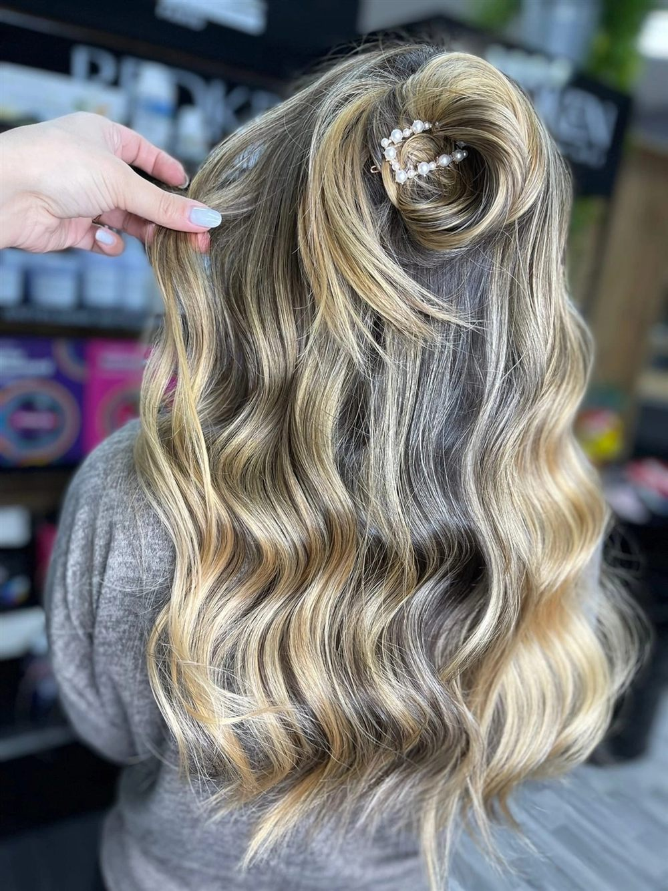
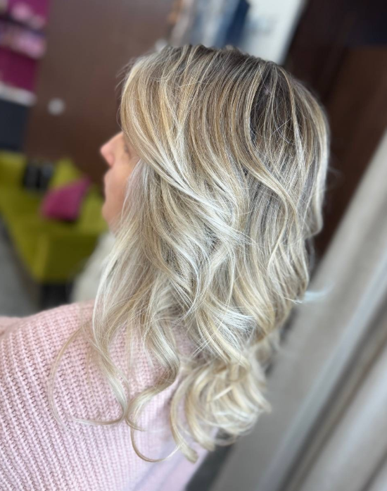
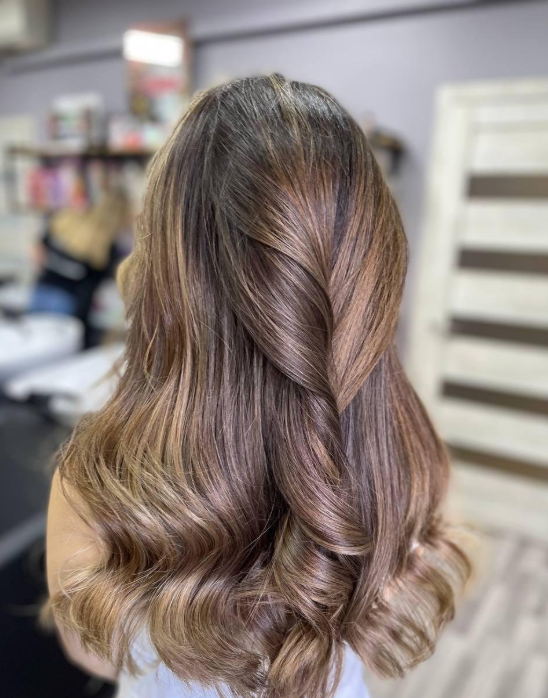
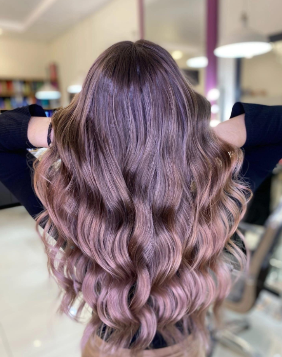

Обучение
колористов
Мы обучаем не только технике окрашивания. В основе курса — диагностика, консультация, здоровье волос, работа с клиентом и система, которая помогает мастеру стать востребованным специалистом.
Курс подходит
двум категориям мастеров
С нуля
Для тех, кто хочет получить новую профессию и уверенно начать путь в колористике под руководством практикующих мастеров.
Повышение квалификации
Для мастеров, которые хотят разбирать сложные случаи, работать с блондом чище и повышать средний чек.
Смена направления
Для специалистов бьюти-сферы, которым близка профессия колориста и хочется развиваться в сильной команде.
Что вы получите
после курса
Понимание диагностики волос и законов цвета.
Практику на моделях и разбор ошибок.
Навык консультации и честной рекомендации клиенту.
Сертификат и поддержку после обучения.
Понимание, как развиваться в профессии и собирать портфолио.
От базы цвета
до коммерческих техник
Теория цвета
Цветовой круг, фон осветления, нейтрализация, работа с пигментом и формулами.
Диагностика
История окрашиваний, состояние волос, риски процедуры и безопасный план работы.
Практика на моделях
Нанесение, выдержка, контроль результата, тонирование и финальный уход.
Сложные случаи
Выход из темного, коррекция цвета, чистые блонды и бережное восстановление.
Работа с клиентом
Консультация, ожидания, домашний уход, повторные визиты и доверие.
Портфолио и рост
Как показывать работы, формировать экспертность и повышать стоимость услуг.



От заявки
до первой работы
Диагностика уровня
Уточняем ваш опыт, цели и зоны роста — предлагаем подходящий формат.
Теория и демонстрация
Разбираем цвет, диагностику, формулы и логику работы на реальных примерах.
Практика на моделях
Вы проходите путь от консультации до финального ухода под сопровождением мастера.
Разбор и поддержка
Фиксируем ошибки, собираем портфолио и даём рекомендации для роста.
Практика на реальных
моделях
На обучении ученики проходят путь от консультации и диагностики до финального оттенка, ухода и рекомендаций клиенту.



Что говорят
после обучения
После курса появилось понимание, как строить консультацию, не бояться сложных волос и объяснять клиенту каждый этап.
Курс с нуляБольше всего помогли разборы формул и практика на моделях. Стало легче делать чистые блонды и поднимать средний чек.
Повышение квалификацииФормат и стоимость
под ваш уровень
Базовый курс
Для тех, кто хочет получить новую востребованную профессию колориста под руководством практикующих мастеров.
- Теория цвета и основы колористики
- Практика на реальных моделях
- Работа со всеми базовыми техниками
- Сертификат академии ИНДИАЛ
Для мастеров
Современные техники, разборы сложных случаев, чистые блонды, консультации и фишки для роста среднего чека.
- Трендовые коммерческие техники
- Исправление сложных случаев
- Секреты работы с чистым блондом
- Психология работы с клиентом
Индивидуальный
Программа обучения, выстроенная полностью под ваши профессиональные цели, уровень и график работы.
- Персональный план занятий
- Разбор исключительно ваших запросов
- Усиленная практическая отработка
- Разбор вашего личного портфолио
Частые
вопросы
Можно ли прийти без опыта?
Да. Для новичков есть программа с базой, практикой и поддержкой после обучения.
Будет ли практика?
Да, обучение строится вокруг реальных моделей и рабочих ситуаций.
Как узнать стоимость?
Напишите нам в Telegram или VK. Мы уточним ваш уровень и предложим подходящую программу.